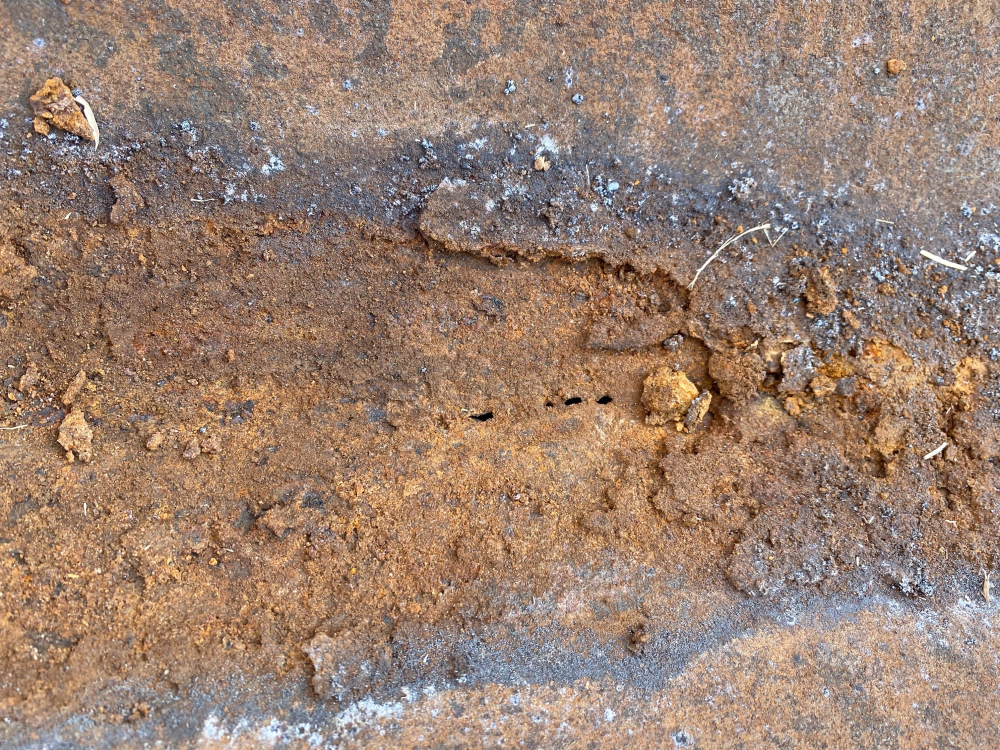

Basic Corrosion
As can be seen from the definition from Merriam-Webster, corrosion is the act of being eaten away by degrees. On pipelines this can be a gradual wearing away, or it can happen rapidly. Why does it occur? Because we are discussing corrosion on a pipeline, let’s look at the element iron (Fe). This is the predominate element in a typical steel pipeline.
Iron is inherently unstable due to the low numbers of electrons in its outer most electron shell. When placed in an electrolyte, iron will give up those electrons to become stable. We often will see the results of this in the form of rust. A great example of this is when you see vehicles from coastal or northern regions. On the coast, the salt that is in the air, or if a vehicle is driven on a beach, will accelerate the corrosion process. In the northern regions, salt is used to prevent and remove snow from roadways. Vehicles to go long period of time without the road salt being cleaned, will show signs of rust.


There are four requirements to have corrosion. 1. Anode 2. Cathode 3. Metallic path 4. Electrolyte The anode is the positive side of the corrosion circuit The cathode is the negative side of the corrosion circuit The metallic path is the path of the electrons The electrolyte is the path of the ions. When corrosion occurs, the ion of the base material will move from the anode, through the electrolyte to the cathode. The electrons will move from the anode to the cathode through the metallic path.

Pipeline Corrsion
Pipelines are made predominately from iron. However, several other elements are added in the alloying process to produce the steels commonly used in pipelines. This requires a lot of energy to be added to the metal, making it an unstable compound. It is very susceptible to corrosion once installed. Additional energy is added to the pipe when it is constructed on site. Each segment is welded together with a girth weld. These areas exhibit faster corrosion rates when buried.
Three of the four elements required for corrosion are inherent to the pipe. Anodes, cathodes, and the metallic path. When buried, the pipe surface is in direct contact with a stable, generally moist electrolyte. This is when the real danger can occur. Looking a figure 1, with the electrolyte against the surface of the pipe, an increase in corrosion activity begins to take place. The anodic portions of the pipe begin to give off ions to the electrolyte, and they begin moving to the cathodic zones. The electrons also move towards the cathodic areas via the pipe itself.